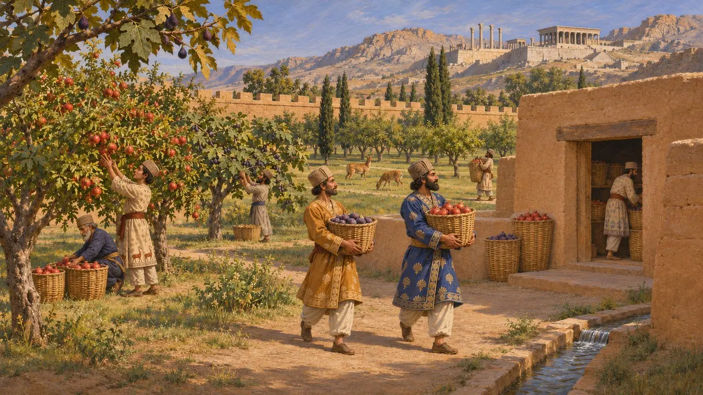
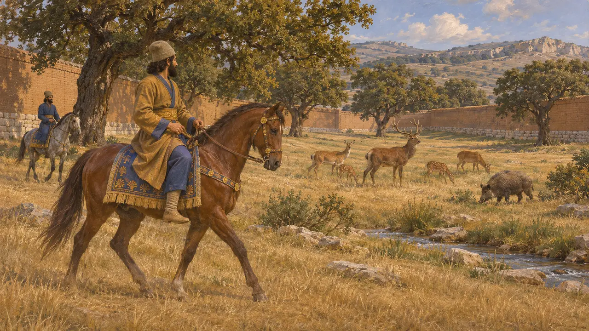
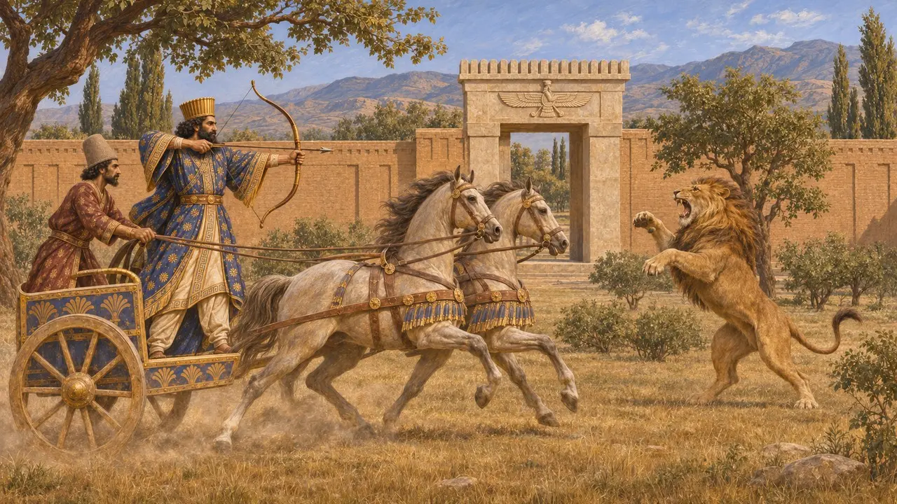
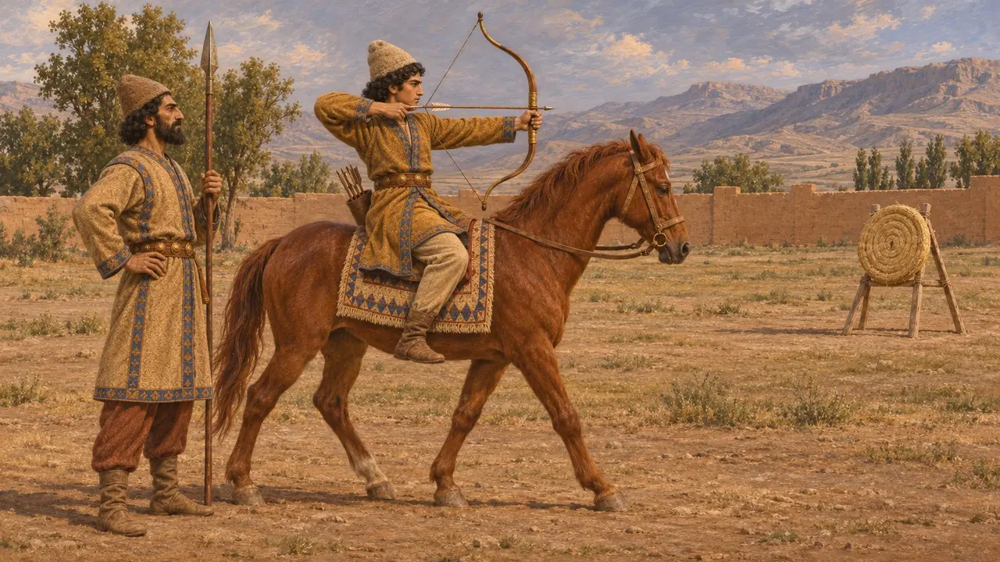
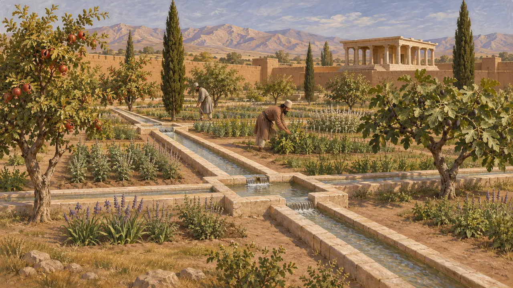

Охотничий парк
Обнесённые стенами царские и сатрапские парки с дичью, Персидская держава, VI–V вв. до н. э.
Персидские цари и их сатрапы держали огороженные парки с деревьями, водой и дикими зверями, которые греческие писатели называли парадисами. Некоторые из них служили охотничьими угодьями, где Царь и знать гонялись верхом за оленями, кабанами и львами. Конная охота с луком являла те качества, которые персидский правитель приписывал себе, и такие парки стали одним из знаков персидской власти по всей державе.
В игре: Охотничий парк — служебное здание в Пасаргадах, Парсе и Сузах, чьи ловчие приглашают дома, мимо которых проходят. Его заметка ссылается на Геродота 1.136, где речь идёт о воспитании мальчиков, а не о парках; существование охотничьих парков в этих городах не доказано.

Слово «парадиз»
Свидетельства эпохиТаблички из крепостной стены Персеполя, написанные по-эламски при Дарии, упоминают поместья «партеташ» — заимствование из персидского слова, которое обычно восстанавливают как «паридайда», то есть «огороженное место». Таблички показывают, что в таких поместьях были плодовые деревья, запасы и работники. В греческий язык это слово вошло как «парадейсос», в древнееврейский — как «пардес», а через позднегреческий и латынь оно дало английское слово paradise — «рай».
Persepolis Fortification tablets; W. Henkelman, The Other Gods Who Are, 2008

Парки, полные диких зверей
Античное свидетельствоКсенофонт, ходивший в поход с Киром Младшим в 401 году, пишет, что у Кира в Келенах во Фригии был большой парк, полный диких зверей, где он охотился верхом. Он описывает и сатрапа Фарнабаза в Даскилии, чьи земли изобиловали дичью — частью в огороженных парках, частью на открытых угодьях. Эти свидетельства относятся к более позднему времени, чем эпоха игры, но это самые ясные описания персидских охотничьих парков.
Xenophon, Anabasis 1.2.7; Xenophon, Hellenica 4.1.15-16

Царь-охотник
Свидетельства эпохиНа цилиндрической печати с надписью на древнеперсидском, эламском и вавилонском языках, где названо имя царя Дария, вероятно Дария I, изображён царь, который с колесницы стреляет из лука во вздыбленного льва; над ним — крылатая фигура. Многие оттиски печатей на табличках из крепостной стены Персеполя тоже изображают охоты и схватки с животными. Охота была частью того, как персидская знать представляла себе царскую силу и доблесть.
Seal of Darius, British Museum; M. Garrison and M. C. Root, Seals on the Persepolis Fortification Tablets I, 2001

Скакать верхом, стрелять из лука и говорить правду
Античное свидетельствоГеродот сообщает, что персидских мальчиков с пяти до двадцати лет учили трём вещам: ездить верхом, стрелять из лука и говорить правду. С парками он это не связывает. С персидской стороны надпись на гробнице самого Дария называет его хорошим всадником, лучником и копейщиком, так что греческое свидетельство и царская надпись сходятся в перечне этих умений.
Herodotus 1.136; DNb

Были ли у царских городов охотничьи парки
СпорныйРаскопки в Пасаргадах выявили сад с каменными водоводами, однако ничто не доказывает, что в нём держали дичь, и учёные расходятся во мнениях, был ли он скорее садом для отдыха или парком. Партеташ из табличек Персеполя выглядят по большей части как хозяйственные поместья. Поэтому историки спорят, сколько парадизов было охотничьими угодьями, а сколько — фруктовыми садами, хозяйствами или парадными садами.
D. Stronach, Pasargadae, 1978; P. Briant, From Cyrus to Alexander, 2002
Источники
- Xenophon, Anabasis 1.2.7
- Xenophon, Hellenica 4.1.15-16
- P. Briant, From Cyrus to Alexander, 2002
- Herodotus 1.136
- DNb
- W. Henkelman, The Other Gods Who Are, 2008